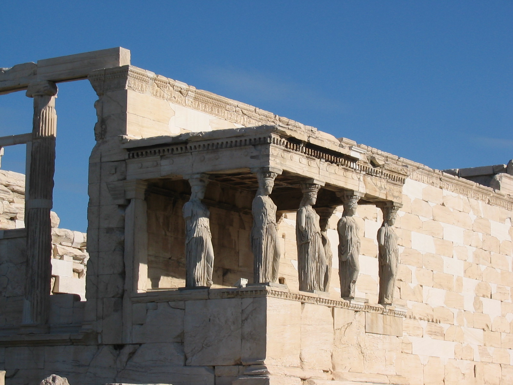
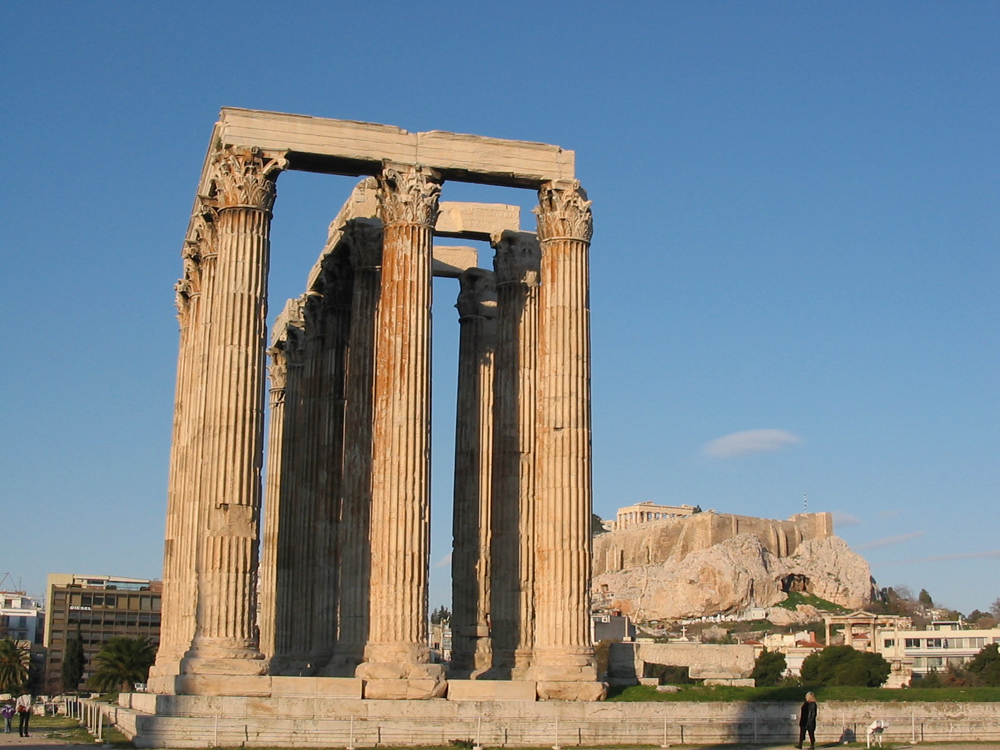
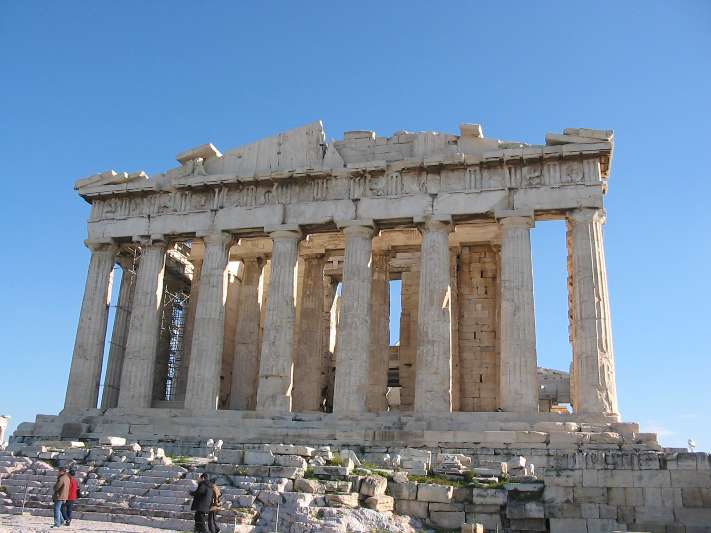
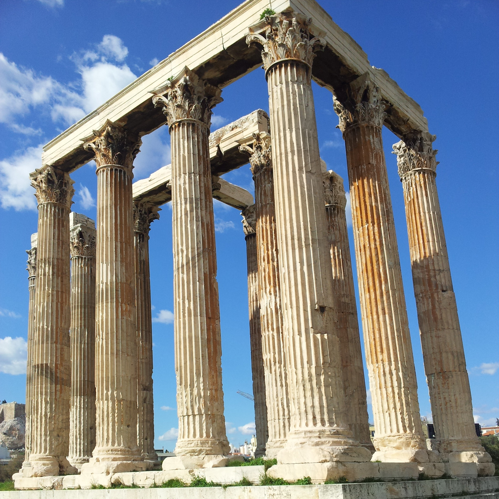

LES ORDRES DES TEMPLES
Vous souvenez-vous de ce qu’est un ordre ?
Reconnaissez-vous l’ordre des colonnes du temple qui se trouve devant vous ?
Reconnaissez-vous l’ordre de cette colonne ?

Reconnaissez-vous l’ordre de cette colonne ?

Reconnaissez-vous l’ordre de cette colonne ?

Le sommet des colonnes n’est pas le seul élément qui différencie l’ordre dorique, de l’ordre ionique et de l’ordre corinthien. Par exemple, si vous regardez la frise du temple de Colombier, elle présente une succession de métopes et de triglyphes, ce qui est typique des temples doriques. L’ordre ionique ou corinthien présente au contraire un bas-relief continu.

D’après vous de quel ordre est ce temple d’Héphaïstos à Athènes ?

D’après vous, de quel ordre est l’Erechthéion à Athènes ?

Une autre face de l’Erechthéion sur l’Acropole a des colonnes de ce type. Comment s’appellent-elles ?

D’après vous, de quel ordre est l’Olympiéion à Athènes ?

D’après vous, de quel ordre est le temple du Parthénon à Athènes ?

D’après vous, de quel ordre est le temple de Zeus à Athènes ?

L'ordre dorique a des colonnes au chapiteau simple, un architrave épais et une frise présentant une succession de métopes et de tryglyphes.
L'ordre ionique a des colonnes au chapiteau à volutes, un architrave mince et une frise contnue représentant par exemple des mythes et des batailles.
L'ordre corinthiens a des colonnes au chapiteau à feuillage d’acanthe, un architrave mince et une frise contnue représentant des mythes et des batailles.